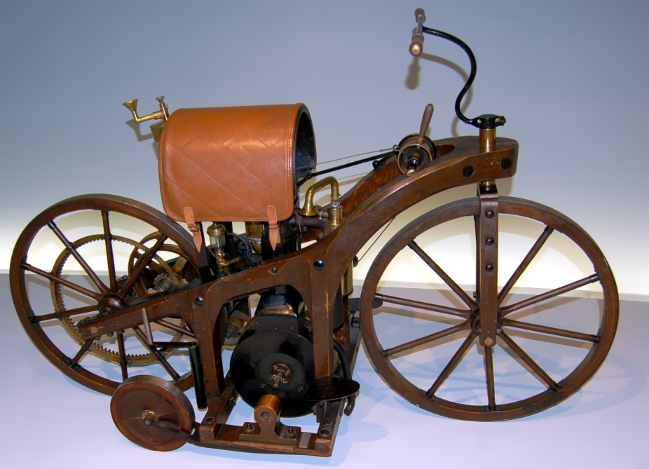
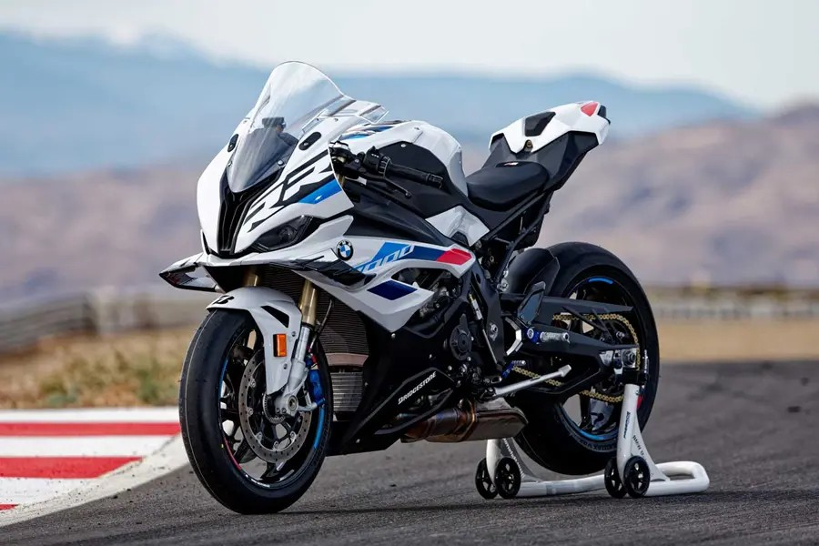

Перший відомий моторний двоколісний екіпаж —
велосипед з паровою машиною — побудований у 1869р.
французом П'єром Мішо
Перший мотоцикл з ДВЗ (Daimler Reitwagen)
був побудований в Німеччині німецькими інженерами
Готтлібом Даймлером і Вільгельмом Майбахом в 1885 році.
Лише в 1902 році філадельфійська компанія «Steffey Motorcycles» придумала перші гальма, які дозволяли зупиняти або сповільнювати мотоцикл.
Daimler first motorcycles
BMW S100RR
